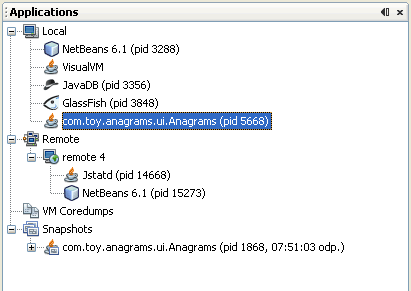

При запуске VisualVM (средства VisualVM) слева в окне VisualVM видно окно Applications (приложения). Окно Applications использует древовидную структуру, чтобы можно было быстро увидеть приложения, выполняющиеся на локальных и подключённых удалённых экземплярах программного обеспечения JVM (Java Virtual Machine, виртуальная машина Java). В окне Applications также отображаются дампы ядра и снимки приложений.
В окне Applications есть узлы и вложенные узлы, которые можно разворачивать, чтобы видеть выполняющиеся приложения и сохранённые файлы. Для большинства узлов окна Applications дополнительные сведения и действия доступны, если щёлкнуть узел правой кнопкой и выбрать пункт в контекстном меню. Набор команд в контекстном меню зависит от узла.

В окне Applications есть следующие основные узлы:
Узел Local (локальные) показывает имя и идентификаторы процессов (PID) приложений Java, которые выполняются на той же системе, что и VisualVM. Когда вы запускаете VisualVM и разворачиваете узел Local, VisualVM автоматически отображает текущие выполняющиеся приложения Java. VisualVM всегда присутствует в списке как одно из локальных приложений. Когда запускается новое локальное приложение Java, под узлом Local появляется узел этого приложения. Узел приложения исчезает, когда приложение завершается.
Если с помощью VisualVM снять Thread Dump (снимок потоков), Heap Dump (снимок кучи) или снимки профилирования приложения, они отображаются как вложенные узлы под узлом этого приложения. Вложенный узел дампа или снимка можно щёлкнуть правой кнопкой и сохранить на локальный компьютер. Все собранные сведения о приложении можно собрать в архив и сохранить как снимок приложения.
Подробнее о просмотре данных локальных приложений см. на следующих страницах:
Когда VisualVM подключается к удалённому узлу, удалённый хост отображается как узел под узлом Remote (удалённые). После подключения к удалённому хосту можно развернуть его узел и увидеть приложения Java, выполняющиеся на этом хосте. Когда на удалённом хосте запускается приложение Java, под узлом удалённого хоста появляется узел этого приложения.
Расположение удалённых хостов нужно добавлять явно, чтобы VisualVM мог к ним подключаться. После добавления удалённого хоста VisualVM запоминает его адрес и подключается к хосту при каждом запуске VisualVM. Если не нужно, чтобы VisualVM подключался к хосту при запуске, щёлкните правой кнопкой узел удалённого хоста и выберите Remove (удалить) до выхода из VisualVM.
Примечание: чтобы получать и отображать сведения о приложениях на удалённом хосте, на удалённом хосте должна быть запущена утилита jstatd. Чтобы запустить утилиту, введите jstatd в командной строке. Утилита jstatd входит в состав JDK (Java Development Kit, комплект разработки Java) версии 6.
Подробнее о просмотре данных удалённых приложений см. на следующих страницах:
Узел VM Coredumps (дампы ядра ВМ) перечисляет открытые двоичные файлы дампа ядра, когда вы открываете эти файлы в VisualVM. Дамп ядра — это двоичный файл со сведениями о состоянии машины во время выполнения на момент снятия дампа ядра. Если у вас есть дамп ядра, из него можно извлечь обзор свойств системы, Heap Dump (снимок кучи) и Thread Dump (снимок потоков).
Примечание: узел Core Dump виден только если VisualVM выполняется в Solaris или Linux.
Дополнительные сведения см. в следующем документе:
Узел Snapshots (снимки) перечисляет все снимки приложений, сохранённые в каталоге пользователя VisualVM, пока они не будут явно удалены. Снимок приложения фиксирует собранные снимки кучи, снимки потоков и снимки профилировщика приложения на момент создания снимка. Узел снимка приложения можно развернуть, чтобы увидеть данные, собранные в снимке.
Узел снимка приложения или любой элемент под этим узлом можно щёлкнуть правой кнопкой, чтобы открыть контекстное меню, в котором выбранный элемент можно открыть, сохранить, удалить и переименовать.
Подробнее о создании и сохранении снимков см. в следующем документе: